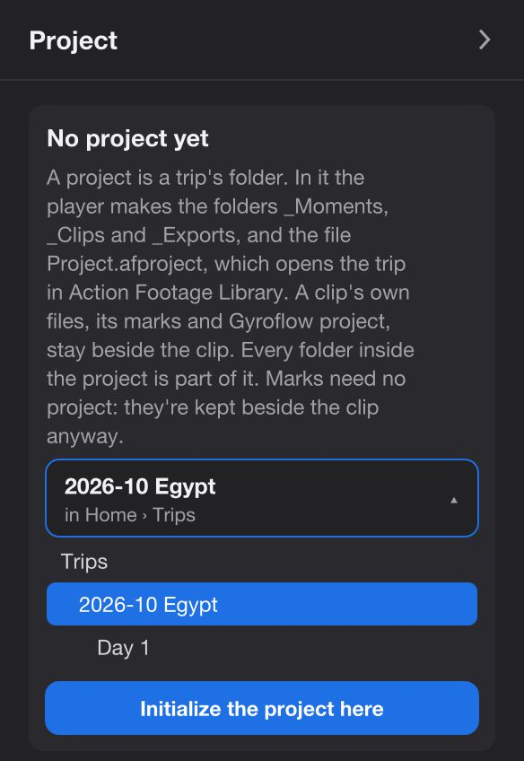
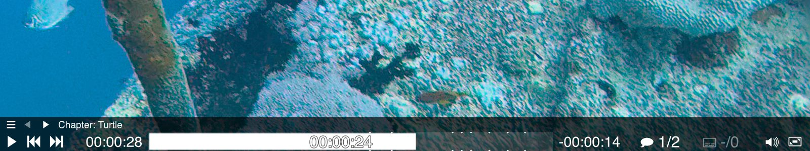
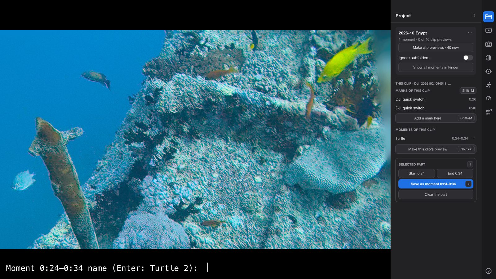
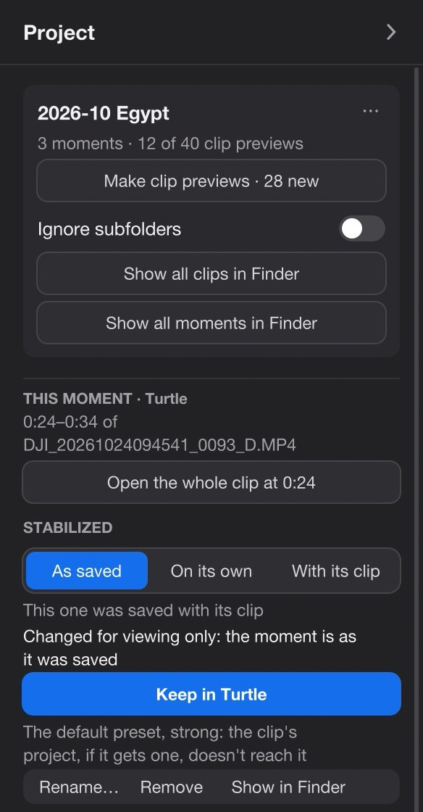
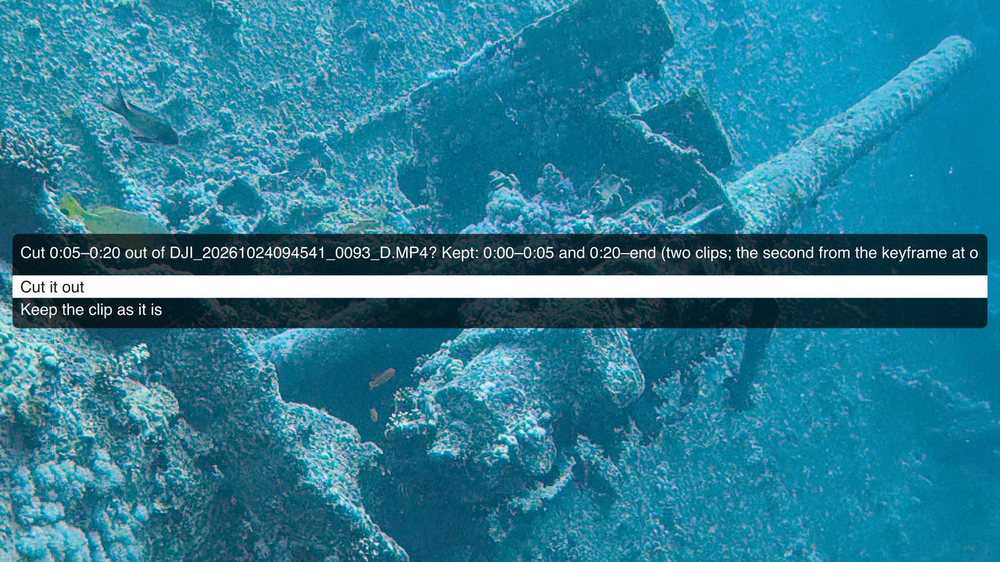
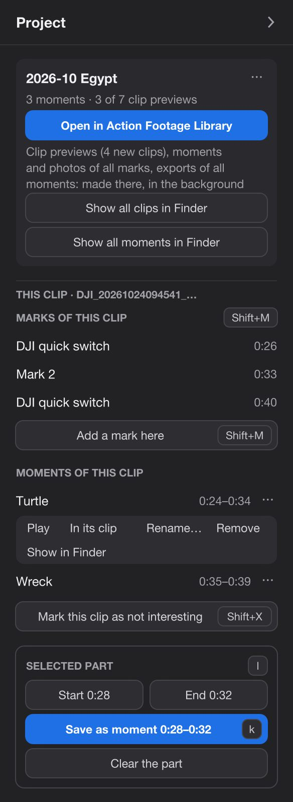

Library
Organizing your footage, as plain files.
Keep a trip's best parts as moments, mark what matters, set the dull clips aside, and export into one folder. When it's time for the proper edit, Final Cut Pro, DaVinci Resolve or Premiere Pro gets all of it, on your original clips.
- No library to import into. Everything is a file in the trip's folder, which FinderFile Explorer shows like any other.
- Viewing is never saving. Opening and watching a clip writes nothing. The player writes only when you press a key or a button for it.
- No hidden files. Every file the player makes is one you can see, move and delete.
The trip's folder
One folder per trip. You can see all of it.
A trip's folder, after an evening with the player. Its own folders start with an underscore, so they sort first, above your footage.
The sizes on the right tell the story: the originals and the exports are big, the moments and the clips' flip-books are tiny. Keep hundreds of them, and copy them anywhere.
Delete a moment's file, and the moment is gone. Delete a clip's preview, and the clip is set aside. Make subfolders in _Moments to sort your moments: they're yours, and your editor gets them as bins.
- 2026-10 Egyptthe folder you made the project in
- a few KB_ActionFootagePlayerthe player's notes for this project: names you typed, which clips have a preview, its settings
- _Moments
- 0.3 MBTurtle.afplink.mp4a moment: one frame to see, a link to the original inside
- 2 MBTurtle.gyroflowits own Gyroflow project, when the clip had one
- Reefa subfolder of your own
- 0.3 MBMoray eel.afplink.mp4
- 0.3 MBexport_2026-10-22 15.28.52.afplink.mp4saved by an export of a part that wasn't a moment yet
- _Clips
- Day 1
- 0.4 MBDJI_20261022152841_0068_D.afplink.mp4a flip-book of the clip, in color
- Day 1
- _Exports
- 115 MBTurtle.movand Turtle (SDR).mov, Turtle (Dolby Vision).mov
- _Stills
- 3 MBDJI_20261022152841_0068_D_8.00s.heica photo from the clip, see Photos
- a few KB2026-10 Egypt (Final Cut Pro).fcpxmlwritten by Marks for the editor
- Day 1your footage
- 500 MBDJI_20261022152841_0068_D.MP4
- 50 MBDJI_20261022152841_0068_D.LRFthe camera's small proxy
- 1 KBDJI_20261022152841_0068_D.marks.jsonyour marks, once you change one
- 2 MBDJI_20261022152841_0068_D.gyroflowthe clip's Gyroflow project, if it has one
About how big each file is, as on our test trip: a 45-second 4K clip from an Osmo Action 6, and a 10-second moment of it, exported in HDR.
A project
A project is just where things are.
A project says two things. Where the trip's original clips are, which the player never changes. And where it puts what you make from them: moments in _Moments, the clips' flip-books in _Clips, exports in _Exports, photos in _Stills. That's all a project is. Everything else is files of their own in those folders, and the sections below go through them.
By default the project is the trip's folder itself, and everything in it finds the clips by where they are inside that folder. Copy or move the whole folder, footage and project together, to another disk or a NAS, and everything works as it did.
The player never makes a project on its own. The first time you save a moment, export, make clip previews or press X, the side panel opens on its Project tab and says No project yet. Pick the folder from the list, which goes from the clip's own folder up to the top of the disk (for a card, the folder above DCIM is chosen for you), and press Initialize the project here. That makes one folder, _ActionFootagePlayer, for the player's own notes. The others appear when something goes in them.
Pick the trip's folder, above the day folders, so the whole trip is one project. Marks need no project at all.
The side panel shows and hides with Tab.

Marks
The camera's highlights, then your own marks.
A mark is a point in a clip. Pressed the highlight button while recording? Those marks are already on the seek bar: the quick switch button or remote on a DJI Osmo Action 4, Action 5 Pro or Action 6, HiLight on a GoPro HERO5 or later. Ctrl+] and Ctrl+[ jump to the next and the previous one, landing 2 seconds before it.
M adds a mark where the video is. On a mark (within half a second), M removes it, the camera's too.
The first change writes <clip>.marks.json beside the clip, with the camera's marks copied into it. From then on, that file is the clip's marks. Delete it, and the camera's highlights are back as they were. The clip itself is never written to.
Marks need no project. In the side panel, Marks of this clip lists them: "DJI quick switch" or "GoPro HiLight" for the camera's, "Mark 3" for yours. Click one to jump there.

Moments
A moment is a small file. Open it, and the original plays.
Press l at the start of a part, l at its end, then k, and type a name.
The name
The player asks "Moment 0:20–0:30 name (Enter: Turtle 2):". Enter alone takes the suggestion: your last name with the next number, or, before you've typed any, the date and time it was filmed. Tab puts the suggestion in the field to edit, ↑ brings back earlier names, Esc saves nothing.
The file
It becomes _Moments/Turtle.afplink.mp4: a small MP4 that shows one color frame of the part (the first mark in it, else its middle), with a link to the original inside. Finder and Quick LookFile Explorer show that frame. Its file dates are when it was filmed, so sorting by date puts moments in the order they happened.
Playing it
Opened in the player, it plays its part of the original, in full quality, then the next moment in the folder. Open the _Moments folder itself, and all of them play in the order they happened. A double-click does this when Action Footage Player is the app that opens MP4 files (Get Info → Open with → Change All…); otherwise the system plays the one-frame preview.
Deleting the file deletes the moment
There's no list to keep in step. Rename it, move it into a subfolder, tag it: it stays a moment. In the side panel, Moments of this clip has Rename… and Remove, which moves it to the TrashRecycle Bin.
Changing its ends
Play the moment, move its start or end with l, then k. The player asks "Update Turtle to …? Enter, or a new name for a new one". Its Finder tags stay.

Stabilized as it was when you saved it
A moment keeps how it was stabilized: either its own copy of the clip's Gyroflow project, trimmed to the part, or the settings it played with. Changing the clip's project later doesn't change the moment.
While a moment plays, the side panel shows Stabilized: As saved / On its own / With its clip. Change anything, and it's for viewing only: the panel says "Changed for viewing only: the moment is as it was saved". Keep in Turtle writes it into the moment.

Clip previews
The whole trip in color, and X for the clips you don't need.
Log footage (a recording mode that keeps more of the light, and looks flat and grey until it's converted) is a wall of grey icons. Clip previews turn it into the trip in color.
Make clip previews
In the Project tab, Make clip previews fills _Clips with one small MP4 per clip: a flip-book of the clip's marked frames, or of about 12 frames spread through it. They're made one at a time in the background, with "Clip previews: 5 of 40" in the corner. Never by themselves: only when you press it.
Browse in FinderFile Explorer
_Clips repeats your day folders. In icon view it's the trip in color, and Quick Look (the space bar) flips through a clip in seconds.In large icons it's the trip in color. Open a preview in the player, and the whole clip plays.
They're files: copy them, sort them into folders of your own, rename them as you like. Each one stays a link to its original clip.
Set a clip aside
X moves the clip's preview to the TrashRecycle Bin: "Not interesting". The clip itself stays. Deleting the preview by hand does the same. X again makes it again.
Deleted stays deleted
Make clip previews only makes them for clips that never had one, so new footage gets its preview and a clip you set aside doesn't come back. Make again for removed clips brings them all back.
Favorites
K for a favorite.
K marks the moment playing as a favorite, or, on a clip, its preview in _Clips. It's a green Favorite tag in Finder. K again takes it off. Tagging a file green by hand in Finder counts too.
K marks the moment playing as a favorite, or, on a clip, its preview in _Clips. It's 5 stars in File Explorer (Properties → Details). K again takes it off. A rating of 4 or 5 stars given by hand counts too.
Your other Finder tags go to the editors as keywords, and the favorites as favorites.The favorites go to the editors as favorites. A moment or clip that exists is kept; one you deleted is not. That's the whole rating system.
Exports
Exports go into _Exports, with a link back.
Shift+E exports the marked part, or the whole clip, as it plays: steady and in color. It asks for a name in the same way as a moment, suggesting the moment's name when the part is one: "Export 0:20–0:30 (SDR) as (Enter: Turtle):". Shift+E again while it runs cancels it.
The file is _Exports/Turtle.mov. A plain name is HDR (bright highlights on screens that can show them); other looks say so: Turtle (SDR).mov, Turtle (Dolby Vision).mov. Each export carries a link to its original. A part that wasn't a moment yet is also saved as one, export_Turtle, so you can delete exports to make room and still play the part in full quality later.
The side panel's Clip tab has the same: Export the part or Export the clip, Export in SDR, Show the last export. Old stabilized folders from earlier versions are left where they are. The looks and formats are on the Log footage page.
Cutting out
Cut out the minute filmed in your pocket.
Mark the spoiled part with l and l, press Ctrl+x, and confirm. The clip is rewritten without that part, without re-encoding: every frame kept is copied exactly. It needs no project.
The player asks first: "Cut 0:05–0:20 out of DJI_20261024094541_0093_D.MP4? Kept: 0:00–0:05 and 0:20–end (two clips; the second from the keyframe at or before 0:20), without re-encoding. The original goes to the Trash." Cut it out or Keep the clip as it is.
What it keeps
- A part in the middle leaves two clips. The first keeps the original's name. The second is named by its own recording time, like
DJI_20261024094600_0093_D.MP4. - The second clip starts at the keyframe (a full frame the others are built from) at or before the cut's end, so up to about a second of the spoiled part can stay.
- Less than half a second left on a side is dropped.
- The camera's data stays: lens, color mode, motion data for stabilization, timecode, sound. Each new clip is read back and checked before anything is replaced; if it doesn't match, nothing changes.
- Marks and moments follow to the clip they're in. A moment entirely inside the cut-out part goes to the TrashRecycle Bin.
What it changes
- The original goes to the TrashRecycle Bin, with its side files: the
.LRF, its Gyroflow project, its marks file and its clip preview. - There's no undo in the player. You can take the original back out of the TrashRecycle Bin by hand, but the first new clip now has its name.
- Only DJI clips are supported for now. We're working on the others. Until then, a GoPro clip is cut only if it passes a check first, and Insta360 and iPhone clips are refused.
- Exports aren't touched, and their links still point at the original. Clip previews need Make clip previews again.

Into your editor
Your moments and marks, in Final Cut Pro, DaVinci Resolve or Premiere Pro.
When you've chosen, take the trip to the edit. The editor gets your original clips, at their own timecode, with your moments, marks, favorites and folders on them. Nothing to find again, nothing to mark twice.
-
Choose the editor
In the Project tab, Marks for the editor, then Final Cut Pro…, DaVinci Resolve… or Premiere Pro…. By default every clip goes in except the ones you set aside with X; With moments or marks takes only the clips that have one.
-
The player writes the file
It goes in the project folder, named after the project: "Final Cut Pro: 14 clips, 23 moments, 41 marks → 2026-10 Egypt (Final Cut Pro).fcpxml", and Finder shows itits folder opens.
-
Import it, once
The editors take an import once and don't merge a second one. So do it when you've finished choosing. Writing it again replaces the file.
| Editor | How to import | What it gets |
|---|---|---|
| Final Cut Pro 10.6 or later, Mac |
… (Final Cut Pro).fcpxml: File → Import → XML, or double-click it. With "Leave files in place", the clips stay where they are, on the card or the NAS. |
An event named after the trip, with every clip at its timecode. Your marks as markers (the camera's noted "DJI quick switch" or "GoPro HiLight"). Each moment as a named range, in a keyword collection per folder and tag. Favorites and set-aside clips as favorites and rejects. A project "2026-10 Egypt – moments" with every moment in a row, named. |
| DaVinci Resolve the free version too |
Three files, since the free version runs no scripts:… (Resolve).fcpxml: File → Import → Timeline, with "Automatically import source clips into media pool".… (Resolve markers).edl: right-click the "clips" timeline → Timelines → Import → Timeline Markers from EDL.… (Resolve metadata).csv: File → Import Metadata To → Media Pool. |
Timelines on the original clips: all the moments in a row, one per folder of moments, and every clip you kept, whole. Markers on the clips timeline: the camera's blue, yours cyan, moments green with their name and length. In the media pool: favorites green, set-aside clips red, your folders and tags as keywords, the moments listed in each clip's comments. |
| Premiere Pro | … (Premiere).xml: File → Import. |
Bins as your folders are. Each clip with its markers. Each moment as a clip with its in and out, in its folder's bin. A sequence of the moments, named. Favorites as a label color, tags in a comment. Set-aside clips are left out. |
For Final Cut Pro, an option, off by default, also makes each moment a clip of its own, so the names show in the browser: Moments as clips of their own. It doubles the clips in the event.
Read-only cards
A locked card gets a project in Documents.
A card with its lock on, or a share you can only read, can't hold a project. When the folder you chose can't be written to, the project goes to Documents/ActionFootagePlayer/Documents\ActionFootagePlayer\ instead, and the player asks for its name: "The card is read-only. Project name (Enter: OSMO ACTION 2026-10-22):".
That folder holds what the trip's folder would: _Moments, _Clips, _Exports, and the marks files at the clips' own paths. Plus Sources.txt, a plain text file saying where the footage is. It also notes the card's id, so next month's trip on the same card, formatted, gets a project of its own.
Copied the card to your NAS? Add the new path as the top line of Sources.txt. The links inside moments and previews are relative, so they all follow. A card that stays locked can't be cut with Ctrl+x: unlock it, or cut the copy.
# Where this project's footage is. The first path that exists is used; edit it if the footage moves. /Volumes/video/2026-10 Egypt Z:\2026-10 Egypt
The Project tab
Every control, top to bottom.
The first tab of the side panel. It shows what fits the moment: the project, then this clip, then the part you marked.
| Label | What it does |
|---|---|
| Before there's a project | |
| No project yet | Says what a project is. Below it, the chosen folder and where it is; click it for the list of folders, from the clip's own up to the top of the disk. |
| Initialize the project here | Makes the project in the chosen folder. |
| The project | |
| The project's name ⋯ | Project folder in FinderProject folder; Make again for removed clips; New moments stabilized on their own: new moments are smoothed over their own part, not as part of the whole clip. Off by default. |
| 3 moments · 12 of 40 clip previews | The counts. |
| Make clip previews · 28 new | Makes the previews clips don't have yet. While it runs: "Making clip previews: 5 of 40" and Stop. If some fail, a line says how many and opens why. |
| Ignore subfolders | All previews in _Clips itself, not in folders like your day folders. Off by default. |
| Show all clips in Finderin the folder | Opens _Clips. |
| Show all moments in Finderin the folder | Opens _Moments. |
| Marks for the editor | Final Cut Pro…, DaVinci Resolve…, Premiere Pro…; which clips: All but rejects (the default) or With moments or marks. |
| This clip | |
| Marks of this clip M | The clip's marks with their times; the one where the video is, highlighted. Click to jump. Add a mark here / Remove the mark here. |
| Moments of this clip | Name and part; click to play. ⋯ has Play, In its clip (the whole clip, with the part marked), Rename…, Remove, Show in FinderShow in Explorer. |
| Mark this clip as not interesting X | Moves its preview to the TrashRecycle Bin. Then Not interesting · undo; for a clip with no preview, Make this clip's preview. |
| Selected part l | |
| Mark start · Mark end | Set the part, as l does; they then show its times, "Start 0:20", "End 0:30". |
| Save as moment 0:20–0:30 k | Asks the name and saves it. On a moment opened in its clip: Update Turtle to …; inside a moment playing: Trim Turtle to …. |
| Clear the part | Forgets the start and end. |
| While a moment plays | |
| Open the whole clip at 0:20 | The original, from the moment's start. |
| Stabilized | As saved (the default), On its own or With its clip, for every moment you play this session. For viewing only. |
| Keep in Turtle | Shows once you've changed something; writes it into the moment. |
| While a clip preview plays | |
| Its own stabilization | A switch. On: the preview gets a Gyroflow project of its own beside it, a copy of how the clip plays now, to change without touching the clip's (Ctrl+e opens it in Gyroflow). Off: that copy goes to the TrashRecycle Bin and the clip's own applies again. Off by default. |

Keys
The keys for your library.
Limits
What to know before you rely on it.
- A moment is a link. It needs its original at the same place in the project, unchanged. Moving the whole trip folder is fine; renaming or re-encoding an original breaks its moments and its preview.
- A moment file isn't for sending. Elsewhere it's one still frame, and messengers and re-encoding strip the link. Send an export.
- A moment's file shows one frame, not a video of the part.
- Clip previews aren't stabilized, and their frames are the nearest keyframes, up to about a second from the mark.
- Marks have no names you can type yet: they're "Mark 1", "Mark 2", or the camera's.
- Cutting replaces the clip. The original goes to the TrashRecycle Bin, there's no undo in the player, exports keep pointing at the old original, and it's made for DJI clips.
- The editor's file is one go. Final Cut Pro and Resolve don't merge a second import of the same clips. So make it once you've marked what you want.
- On Windows, projects, moments and previews have had little testing so far.
Questions
Before you start.
Does the player change my footage?
Only when you cut a part out with Ctrl+x and confirm: then the clip is replaced by the parts kept, and the original goes to the TrashRecycle Bin. Otherwise it only reads your clips. Beside them it writes a marks file once you change a mark, and a Gyroflow project when you make one; everything else goes in the project's own folders.
Do I need a project for marks?
No. Marks are kept beside the clip, project or not. Moments, clip previews, exports and X need one.
I moved the trip to my NAS. Are my moments lost?
No, as long as the trip folder moves whole, footage and project together. The links are relative to the project, so they still find their clips. A project in Documents gets the new path as a line in its Sources.txt.
Can I send a moment to a friend?
Send an export instead: Shift+E on the moment. The moment's own file is a frame and a link to a clip only you have.
Does it work with the free DaVinci Resolve?
Yes. The free version runs no scripts, so the player writes three files that it imports by hand: a timeline file, a marker list and a metadata table.
Try it
Open a trip, keep what's worth keeping.
Free, no account, and everything it keeps is a file you can see.